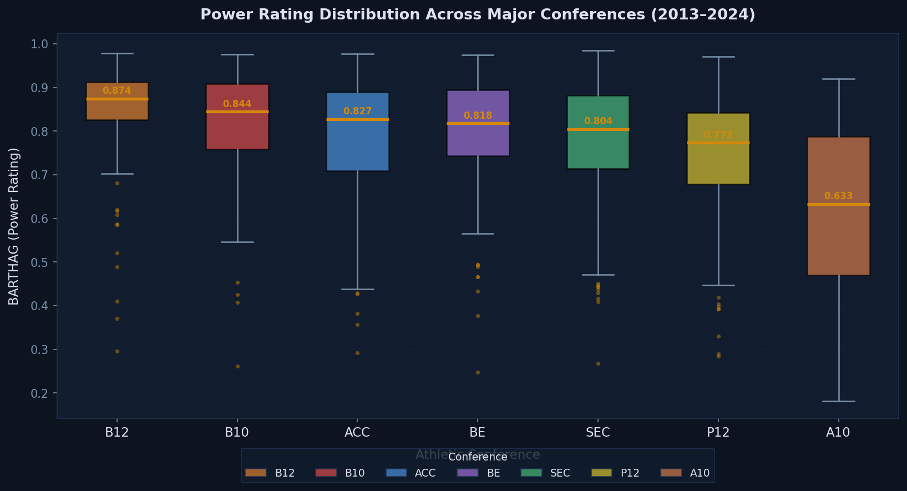
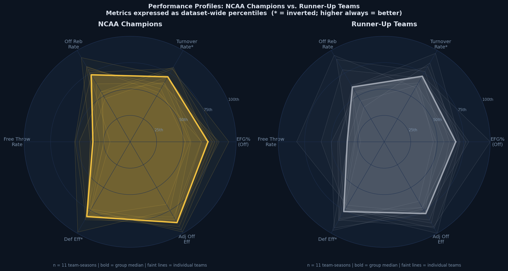
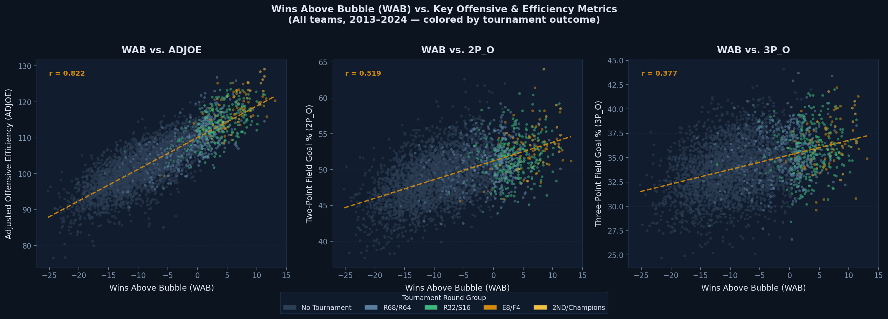

Examining how adjusted offensive and defensive efficiency, power rating, and shooting metrics relate to postseason performance across eleven NCAA Tournament seasons (2013–2024).
College basketball analytics has increasingly shifted from traditional statistics like win-loss records and raw scoring margins toward advanced efficiency-based metrics that more accurately reflect team quality and predict competitive outcomes. This project analyzes NCAA Division I basketball team performance using a dataset compiled from Kaggle and originally sourced from analyst Bart Torvik's analytics database, which adjusts for opponent strength and game tempo.
The central question is straightforward: do advanced metrics like adjusted offensive efficiency, adjusted defensive efficiency, power rating (BARTHAG), and shooting efficiency meaningfully predict postseason success in the NCAA Tournament? This matters because modern program evaluation, bracketology, and strategic decision-making increasingly depend on deeper analytics. College basketball also offers an analytically rich environment: over 350 Division I teams, significant tactical diversity across conferences, and a high-variance single-elimination postseason that makes identifying true quality difficult with surface-level statistics alone.
The five visualizations below progress from a broad conference-level overview through increasingly specific comparisons: how conferences differ in team quality, what separates champions from runners-up, which attributes correlate with wins above the tournament bubble, how teams distribute across efficiency space by postseason result, and finally whether that efficiency advantage translates systematically into deeper tournament runs when teams are binned by tier.
The dataset is from Kaggle titled the College Basketball Dataset, which compiles advanced NCAA Division I statistics originally scraped from Bart Torvik's analytics website. It covers the 2013–2019 and 2021–2024 seasons (the 2020 tournament was canceled due to COVID-19), contains 3,885 rows and 24 columns, where each row represents one team in one season. Variables span basic performance measures, advanced efficiency metrics, shooting statistics, possession-based rates, tempo, and tournament outcomes including postseason round and seed. A mix of continuous numerical variables and categorical variables allows comparison across teams, conferences, and seasons. No imputation was required; non-tournament teams simply have a blank postseason field, which is treated as a distinct "No Tournament" category throughout the analysis.
Investigates mathematical upset probabilities based on tournament seeding. Because our dataset includes both seed and postseason round, this paper provides a benchmark for evaluating whether advanced efficiency metrics outperform committee-assigned seeding as a predictor of tournament success.
bracketodds.cs.illinois.edu →Introduces efficiency-based evaluation methods, adjusted points per possession normalized for opponent strength, that directly underpin ADJOE and ADJDE. This work established the theoretical foundation for modern college basketball analytics and informs how we interpret the efficiency scatter in Visualization 4.
digitalcommons.bryant.edu →Before examining whether advanced metrics predict individual team success, it is useful to understand how power ratings are distributed at the conference level. BARTHAG, the probability that a team would defeat an average Division I opponent on a neutral court, provides a single composite measure of team strength. The box plot below shows the spread of BARTHAG across the seven major conferences, ordered by median value, for all team-seasons from 2013 to 2024.

The Big Ten (B10) and Big 12 (B12) consistently produce the highest median BARTHAG values, followed closely by the ACC and SEC. The Atlantic 10 (A10) shows substantially lower median power ratings, reflecting the gap between power-conference and mid-major programs even among the seven conferences considered "major." Importantly, every conference exhibits wide internal variance: the top quartile of ACC or SEC teams can match or exceed the median of any other conference, while the bottom quartile drags the distribution downward. This variance within conferences is what makes BARTHAG a more informative metric than conference membership alone when predicting tournament outcomes.
If advanced metrics capture what makes a team elite, we should expect NCAA champions and runners-up to show distinct profiles across multiple dimensions. The radar charts below display six key metrics, effective field goal percentage, turnover rate, offensive rebound rate, free throw rate, adjusted defensive efficiency, and adjusted offensive efficiency, expressed as dataset-wide percentiles, so each axis represents where a team ranks relative to all 3,885 team-seasons. Metrics where lower raw values are better (turnover rate, defensive efficiency) are inverted so that higher on every axis always means better performance. The bold polygon is the group median; faint lines represent individual team-seasons.

Champions and runners-up share broadly similar profiles: both groups sit well above the dataset median on every metric, but champions show a consistently higher median on adjusted offensive efficiency and effective field goal percentage. The most revealing difference is defensive efficiency: champion teams cluster more tightly at the top of that axis, suggesting that elite, consistent defense is a stronger differentiator between the two finalist groups than any single offensive metric. The spread of individual faint lines for runners-up is also noticeably wider, indicating that the path to the championship game is more varied while the profile of a champion is more constrained.
Wins Above Bubble (WAB) measures how many more wins a team accumulated than a hypothetical bubble team would have facing the same schedule, making it a schedule-adjusted indicator of how definitively a team established its tournament worthiness. The three scatter plots below compare WAB against adjusted offensive efficiency, two-point field goal percentage, and three-point field goal percentage. Points are colored by grouped tournament outcome, and each panel includes a line of best fit (OLS) with the Pearson correlation coefficient (r).

Adjusted offensive efficiency (ADJOE) has the strongest positive correlation with WAB of the three metrics shown, confirming that pace- and opponent-adjusted scoring efficiency is a more reliable driver of schedule-adjusted win accumulation than raw shooting percentages. Two-point percentage shows a moderate positive relationship, while three-point percentage has a weaker, noisier correlation with WAB. This is consistent with the well-documented high variance of three-point shooting at the team level. Across all three panels, teams reaching the Elite Eight or beyond (amber and gold points) cluster in the upper-right, while non-tournament teams concentrate in the lower-left, reinforcing that WAB and offensive efficiency jointly discriminate between tournament-caliber and below-average programs.
Plotting adjusted offensive efficiency (ADJOE) on the horizontal axis against adjusted defensive efficiency (ADJDE) on the vertical axis (with the vertical axis inverted so that "up" always means better defense) creates a two-dimensional efficiency space. The upper-right quadrant contains teams with elite offense and elite defense; these are the programs most likely to make deep tournament runs. Point size encodes BARTHAG, so the largest circles represent the highest-rated teams. Color encodes the postseason round reached.
How to use this chart: Use the Season dropdown to filter by a specific year or view all seasons at once. Click any round label in the legend to isolate teams that reached that round; click again to reset. Hover over any point to see the team name, conference, efficiency values, power rating, and tournament result.
Championship and Final Four teams occupy a clearly defined upper-right region of efficiency space (high ADJOE combined with low ADJDE) and this separation becomes visually obvious when the legend is used to isolate deep tournament runs. Non-tournament teams, by contrast, scatter broadly and occupy the lower-left quadrant. The interactive season filter reveals year-to-year variation: some seasons produce a denser cluster of elite teams (e.g., 2015, 2019) while others are more diffuse, which in part explains bracket unpredictability. Crucially, the two-dimensional efficiency position is a stronger visual separator than any single metric would be in isolation.
The preceding visualizations establish that elite teams look different in efficiency space. This chart tests whether that difference translates systematically into better tournament outcomes. All 3,885 team-seasons are divided into five equal-count quintile tiers based on a selected efficiency metric (BARTHAG, ADJOE, or ADJDE), and for each tier the full postseason distribution, what percentage of teams in that tier reached each round, is shown as a stacked bar. If advanced metrics are genuinely predictive, Tier 5 should be dominated by tournament teams and deep runs, while Tier 1 should be almost entirely non-tournament programs.
How to use this chart: Use the Tier metric dropdown to switch between BARTHAG, offensive efficiency, and defensive efficiency quintile tiers. Hover over any colored segment to see the exact count and percentage for that round within that tier. Click any segment to highlight that postseason round across all five tiers simultaneously; click the same segment again to deselect.
The gradient is unambiguous across all three metric choices. Tier 5 teams (top quintile by any efficiency metric) make up nearly all tournament participants at the deepest rounds, while Tier 1 and Tier 2 teams are almost exclusively non-tournament programs. Switching the metric reveals subtle differences: BARTHAG produces the sharpest tier separation, consistent with its role as a composite power rating, while ADJDE (defensive efficiency) shows a slightly steeper gradient toward elite rounds than ADJOE, suggesting that defensive strength above a threshold is a more reliable predictor of reaching the Final Four and beyond than offensive output at the same tier level. Together, these patterns provide strong evidence that advanced efficiency metrics are meaningfully predictive of postseason outcomes.
Across five visualizations, advanced efficiency metrics, particularly the composite power rating BARTHAG and adjusted defensive efficiency ADJDE, are strong systematic predictors of NCAA Tournament depth. Three specific, actionable conclusions follow from this analysis.
While both ADJOE and ADJDE separate tournament tiers, the radar chart profiles of champions versus runners-up and the tier-distribution gradient in Viz 5 consistently show ADJDE producing sharper stratification at the deepest rounds. Programs and analysts building toward a championship run should weight defensive investment heavily, as elite offense is more common among near-elite teams than elite defense is.
The multi-faceted scatter in Viz 3 demonstrates that three-point percentage has a noticeably weaker and noisier relationship with WAB than adjusted offensive efficiency does. Recruiting strategies or in-season adjustments that prioritize shot quality and offensive system efficiency, captured by ADJOE, over raw three-point volume are better aligned with what actually predicts postseason success.
Tier 5 BARTHAG teams reach the Sweet 16 or further at dramatically higher rates than committee seeding alone would predict for mid-major programs. Future work extending this analysis could build a logistic regression or gradient-boosted model using ADJOE, ADJDE, and BARTHAG to generate head-to-head win probabilities, testing whether efficiency-first brackets outperform seed-bracket baselines across the eleven seasons in this dataset.
Several extensions would strengthen these findings. First, incorporating game-level data rather than season averages would allow analysis of whether teams that peak late (improving ADJOE/ADJDE in conference tournament play) outperform their season-average tier in the NCAA Tournament. Second, conference-level adjustment, comparing how a team's metrics compare within their own conference, not just across the full dataset, could improve predictions for mid-major programs that dominate weak conferences. Third, this analysis covers team-level aggregates; player-level efficiency metrics (usage rate, true shooting percentage) would allow examination of whether individual star quality provides tournament upside beyond what team-level metrics capture.